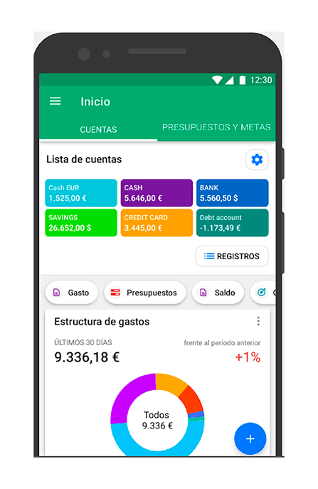

Este proyecto consiste en el desarrollo de un sistema web orientado a la administración de bibliotecas universitarias. La plataforma permite registrar libros, gestionar préstamos y devoluciones, así como mantener un control detallado de los ejemplares disponibles. El objetivo principal es optimizar los procesos administrativos y facilitar el acceso a la información tanto para estudiantes como para el personal de la biblioteca. Además de las funciones básicas de gestión, el sistema incorpora herramientas de búsqueda avanzada que permiten localizar libros por título, autor o categoría. También genera reportes sobre los préstamos realizados y el estado del inventario, contribuyendo a una mejor organización de los recursos bibliográficos. Este proyecto demuestra cómo la tecnología puede mejorar la eficiencia de los servicios académicos.

La Aplicación de Control de Gastos Personales fue diseñada para ayudar a los usuarios a administrar sus finanzas de manera sencilla y eficiente. Mediante esta herramienta, los usuarios pueden registrar ingresos y gastos diarios, clasificarlos en categorías y llevar un seguimiento detallado de sus movimientos financieros. El sistema busca fomentar hábitos de ahorro y una mejor planificación económica. La aplicación también ofrece reportes mensuales y estadísticas que permiten visualizar el comportamiento financiero del usuario. Gracias a estas funcionalidades, es posible identificar patrones de gasto y tomar decisiones más informadas sobre el uso del dinero. Este proyecto representa una solución práctica para la gestión financiera personal utilizando herramientas modernas de desarrollo de software. Con estos cuatro párrafos tendrás suficiente contenido para que la sección Portafolio se vea completa y profesional en tu sitio web.